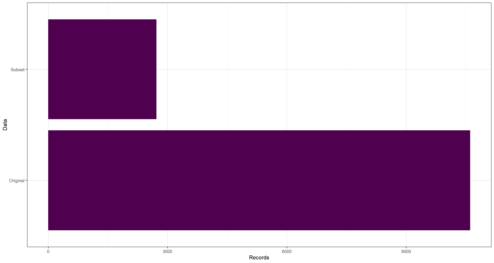
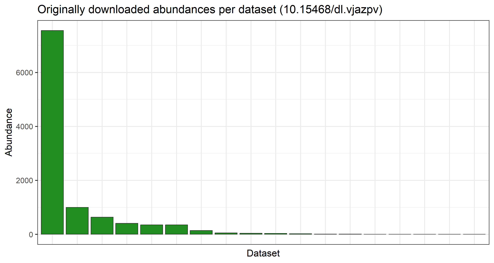
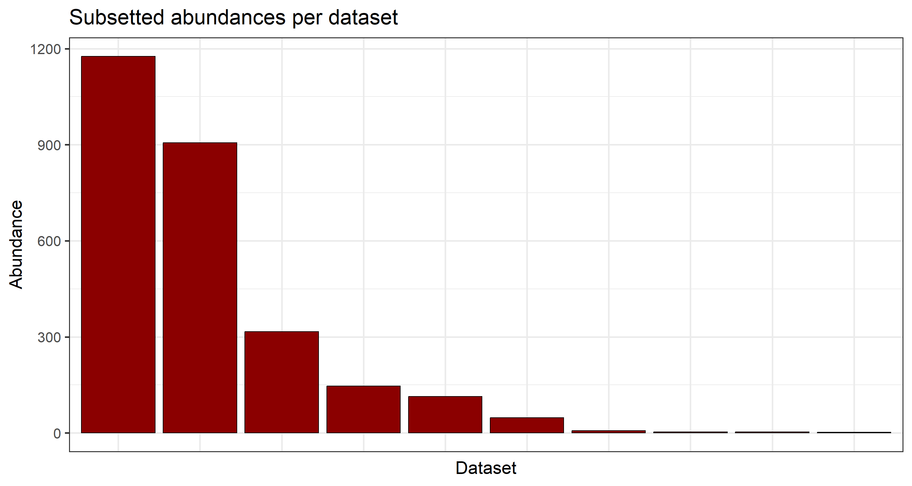

Citing GBIF Data
Preamble, Package-Loading, and GBIF API Credential Registering (click here):
## Custom install & load function
install.load.package <- function(x) {
if (!require(x, character.only = TRUE)) {
install.packages(x, repos = "http://cran.us.r-project.org")
}
require(x, character.only = TRUE)
}
## names of packages we want installed (if not installed yet) and loaded
package_vec <- c(
"rgbif",
"ggplot2" # for visualisation
)
## executing install & load for each package
sapply(package_vec, install.load.package)
## rgbif ggplot2
## TRUE TRUE
options(gbif_user = "my gbif username")
options(gbif_email = "my registred gbif e-mail")
options(gbif_pwd = "my gbif password")
First, we obtain and load the data use for our publication like such:
# Download query
res <- occ_download(
pred("taxonKey", sp_key),
pred_in("basisOfRecord", c("HUMAN_OBSERVATION")),
pred("country", "NO"),
pred("hasCoordinate", TRUE),
pred_gte("year", 2000),
pred_lte("year", 2020)
)
# Downloading and Loading
res_meta <- occ_download_wait(res, status_ping = 5, curlopts = list(), quiet = FALSE)
res_get <- occ_download_get(res)
res_data <- occ_download_import(res_get)
# Limiting data according to quality control
preci_data <- res_data[which(res_data$coordinateUncertaintyInMeters < 200), ]
# Subsetting data for desired variables and data markers
data_subset <- preci_data[
,
c("scientificName", "decimalLongitude", "decimalLatitude", "basisOfRecord", "year", "month", "day", "eventDate", "countryCode", "municipality", "taxonKey", "species", "catalogNumber", "hasGeospatialIssues", "hasCoordinate", "datasetKey")
]
Now all we need to worry about is properly accrediting data sources to make our data usage fair and reproducible.
Finding Download Citation
Much like previous steps of this workshop, identifying the correct citation for a given download from GBIF can be done via:
- GBIF Portal
rgbiffunctionality
GBIF Portal
To figure out how to reference a GBIF mediated set of data records you may head to the download tab of the GBIF portal where, once in the detailed overview of an individual download job, you will find proper accrediation instructions right at the top:

I would like to caution against this practise as the download tab can become a bit cluttered when having a long history of asking GBIF for similar downloads.
rgbif
To avoid the pitfalls of manual data citation discovery, rgbif download metadata make available to us directly a DOI which can be used for refrencing our data:
paste("GBIF Occurrence Download", occ_download_meta(res)$doi, "accessed via GBIF.org on", Sys.Date())
## [1] "GBIF Occurrence Download 10.15468/dl.vjazpv accessed via GBIF.org on 2024-10-30"
With this, you are ready to reference the data you use.
Derived Datasets
Derived datasets are citable records of GBIF-mediated occurrence data derived either from:
- a GBIF.org download that has been filtered/reduced significantly, or
- data accessed through a cloud service, e.g. Microsoft AI for Earth (Azure), or
- data obtained by any means for which no DOI was assigned, but one is required (e.g. third-party tools accessing the GBIF search API)
For our purposes, we have used a heavily subsetted data download - just look at the number of records in the original and the subsetted data:
ggplot(data.frame(
Records = c(nrow(data_subset), nrow(res_data)),
Data = c("Subset", "Original")
), aes(y = Data, x = Records)) +
geom_bar(stat = "identity", fill = "#4f004e") +
theme_bw(base_size = 12)

To correctly reference the underlying data sets mediated by GBIF and contributing to our final dataset, we should register a derived data set. When created, a derived dataset is assigned a unique DOI that can be used to cite the data. To create a derived dataset you will need to authenticate using a GBIF.org account and provide:
- a title of the dataset,
- a list of the GBIF datasets (by DOI or datasetKey) from which the data originated, ideally with counts of how many records each dataset contributed,
- a persistent URL of where the extracted dataset can be accessed,
- a description of how the dataset was prepared,
- (optional) the GBIF download DOI, if the dataset is derived from an existing download , and
- (optional) a date for when the derived dataset should be registered if not immediately .
Arguably, the most important aspect here is the list of GBIF datasets and the counts of data used per dataset. First, let’s isolate how many datasets contributed to our original data and the subsetted, final data:
## Original
length(unique(res_data$datasetKey))
## [1] 18
## Subsetted
length(unique(data_subset$datasetKey))
## [1] 10
There is a signifcant decrease in number of datasets which make up our final data product post-subsetting. Let us visualise how the data records are spread across the individual datasets per data product we have handled:
## Originally downloaded abundances per dataset
plot_data <- data.frame(table(res_data$datasetKey))
ggplot(
plot_data,
aes(
x = factor(Var1, levels = plot_data$Var1[order(plot_data$Freq, decreasing = TRUE)]),
y = Freq
)
) +
geom_col(color = "black", fill = "forestgreen") +
labs(
y = "Abundance", x = "Dataset",
title = paste0("Originally downloaded abundances per dataset (", occ_download_meta(res)$doi, ")")
) +
theme_bw(base_size = 21) +
theme(axis.text.x = element_blank(), axis.ticks.x = element_blank())

## Subsetted abundances per dataset
plot_subset <- data.frame(table(data_subset$datasetKey))
ggplot(
plot_subset,
aes(
x = factor(Var1, levels = plot_subset$Var1[order(plot_subset$Freq, decreasing = TRUE)]),
y = Freq
)
) +
geom_col(color = "black", fill = "darkred") +
labs(y = "Abundance", x = "Dataset", title = "Subsetted abundances per dataset") +
theme_bw(base_size = 21) +
theme(axis.text.x = element_blank(), axis.ticks.x = element_blank())

Subsequently, to prepare a potential query to GBIF to establish a derived data set for us, we can tabulate the counts of records per dataset key as follows:
knitr::kable(table(data_subset$datasetKey))
| Var1 | Freq |
|---|---|
| 09c38deb-8674-446e-8be8-3347f6c094ef | 2 |
| 492d63a8-4978-4bc7-acd8-7d0e3ac0e744 | 3 |
| 50c9509d-22c7-4a22-a47d-8c48425ef4a7 | 7 |
| 6a948a1c-7e23-4d99-b1c1-ec578d0d3159 | 316 |
| 6ac3f774-d9fb-4796-b3e9-92bf6c81c084 | 3 |
| 8a863029-f435-446a-821e-275f4f641165 | 114 |
| b124e1e0-4755-430f-9eab-894f25a9b59c | 1176 |
| b49a2978-0e30-4748-a99f-9301d17ae119 | 906 |
| b848f1f3-3955-4725-8ad8-e711e4a9e0ac | 146 |
| c47f13c1-7427-45a0-9f12-237aad351040 | 48 |
Finally, we can head to the registration for derived data sets at GBIF and supply our information:

Session Info
## R version 4.4.0 (2024-04-24 ucrt)
## Platform: x86_64-w64-mingw32/x64
## Running under: Windows 11 x64 (build 22631)
##
## Matrix products: default
##
##
## locale:
## [1] LC_COLLATE=Norwegian Bokmål_Norway.utf8 LC_CTYPE=Norwegian Bokmål_Norway.utf8
## [3] LC_MONETARY=Norwegian Bokmål_Norway.utf8 LC_NUMERIC=C
## [5] LC_TIME=Norwegian Bokmål_Norway.utf8
##
## time zone: Europe/Oslo
## tzcode source: internal
##
## attached base packages:
## [1] stats graphics grDevices utils datasets methods base
##
## other attached packages:
## [1] ggplot2_3.5.1 rgbif_3.8.1
##
## loaded via a namespace (and not attached):
## [1] styler_1.10.3 sass_0.4.9 utf8_1.2.4 generics_0.1.3
## [5] xml2_1.3.6 blogdown_1.19 stringi_1.8.4 httpcode_0.3.0
## [9] digest_0.6.37 magrittr_2.0.3 evaluate_0.24.0 grid_4.4.0
## [13] bookdown_0.40 fastmap_1.2.0 R.oo_1.26.0 R.cache_0.16.0
## [17] plyr_1.8.9 jsonlite_1.8.8 R.utils_2.12.3 whisker_0.4.1
## [21] crul_1.5.0 urltools_1.7.3 httr_1.4.7 purrr_1.0.2
## [25] fansi_1.0.6 scales_1.3.0 oai_0.4.0 lazyeval_0.2.2
## [29] jquerylib_0.1.4 cli_3.6.3 rlang_1.1.4 triebeard_0.4.1
## [33] R.methodsS3_1.8.2 bit64_4.0.5 munsell_0.5.1 withr_3.0.1
## [37] cachem_1.1.0 yaml_2.3.10 tools_4.4.0 dplyr_1.1.4
## [41] colorspace_2.1-1 curl_5.2.2 vctrs_0.6.5 R6_2.5.1
## [45] lifecycle_1.0.4 stringr_1.5.1 bit_4.0.5 pkgconfig_2.0.3
## [49] pillar_1.9.0 bslib_0.8.0 gtable_0.3.6 data.table_1.16.0
## [53] glue_1.7.0 Rcpp_1.0.13 highr_0.11 xfun_0.47
## [57] tibble_3.2.1 tidyselect_1.2.1 knitr_1.48 farver_2.1.2
## [61] htmltools_0.5.8.1 labeling_0.4.3 rmarkdown_2.28 compiler_4.4.0